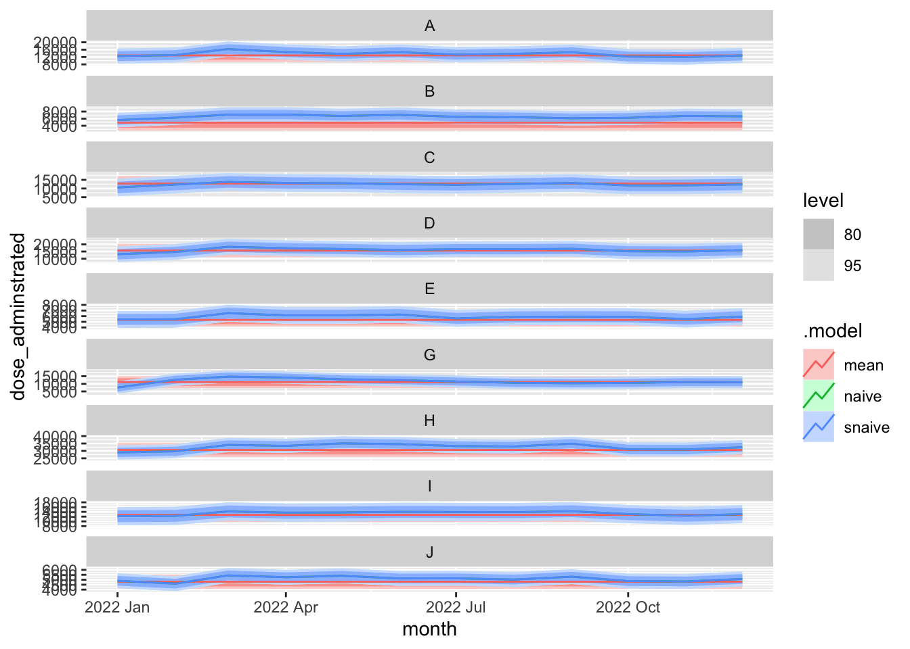
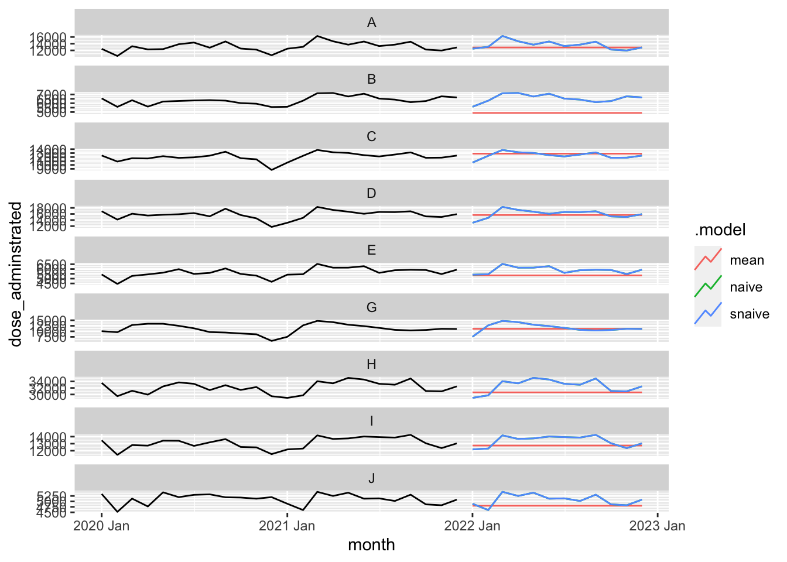
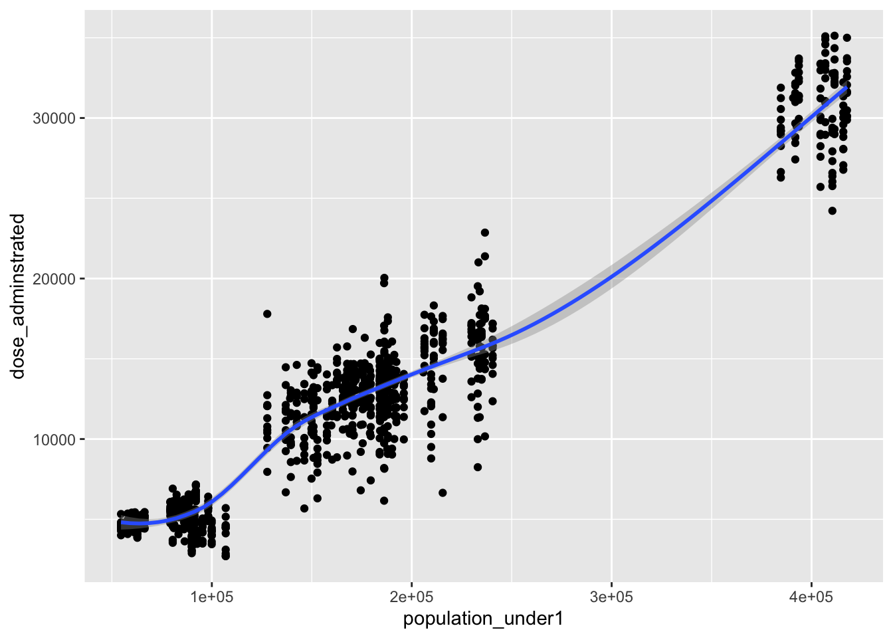
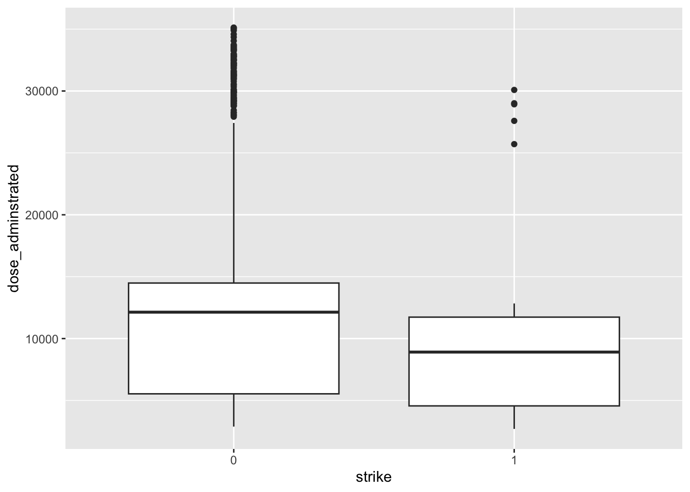
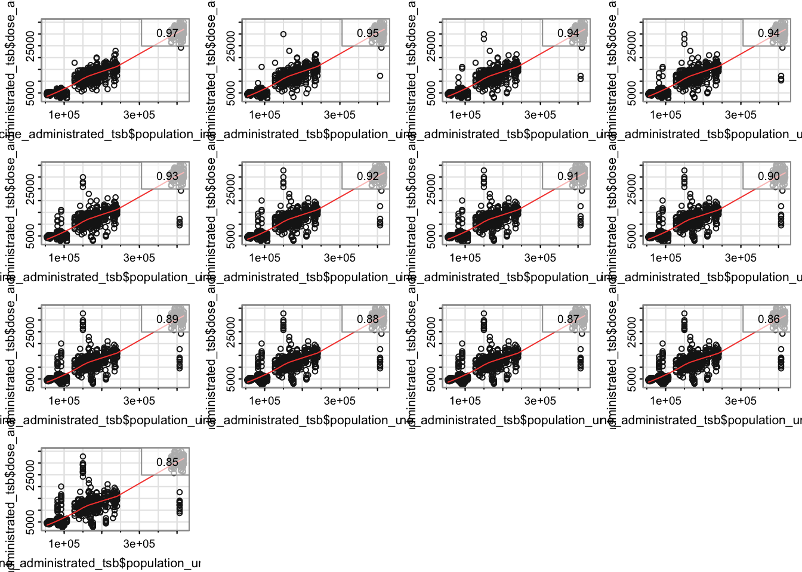
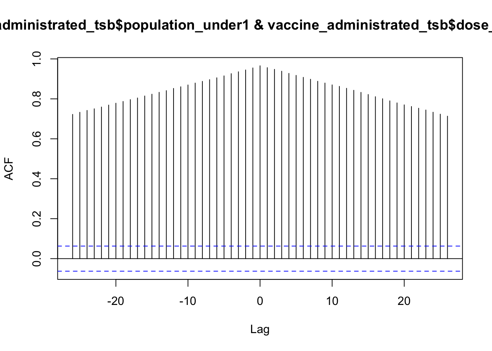

── Conflicts ────────────────────────────────────────── tidyverse_conflicts() ──
✖ dplyr::filter() masks stats::filter()
✖ lubridate::interval() masks tsibble::interval()
✖ dplyr::lag() masks stats::lag()
ℹ Use the conflicted package (<http://conflicted.r-lib.org/>) to force all conflicts to become errors
Now, we proceed by specifying and training models on administered vaccine doses. These models are then used to produce forecasts for the next 12 months beyond the latest data point.
Basic of modelling/forecasting
Specify models and train models
We start with three simple benchmark models: i) total average, ii) naive, and iii) seasonal naive
We specify models using the function corresponding to the name of the forecasting model. We use a formula (response ~ terms) to specify models and train models (i.e. estimate parameters) using model(response ~ terms) function. If there is no term for the method, we ignore the ~ and terms, (e.g. MEAN(dose_adminstrated)):
Now, complete the following R chunk to specify and train the there simple models on data:
# A mable: 9 x 4
# Key: region [9]
region mean naive snaive
<chr> <model> <model> <model>
1 A <MEAN> <SNAIVE> <SNAIVE>
2 B <MEAN> <SNAIVE> <SNAIVE>
3 C <MEAN> <SNAIVE> <SNAIVE>
4 D <MEAN> <SNAIVE> <SNAIVE>
5 E <MEAN> <SNAIVE> <SNAIVE>
6 G <MEAN> <SNAIVE> <SNAIVE>
7 H <MEAN> <SNAIVE> <SNAIVE>
8 I <MEAN> <SNAIVE> <SNAIVE>
9 J <MEAN> <SNAIVE> <SNAIVE>
Observe the vaccine_fit object.
What type of data structure is it? How many rows and columns are present, and what do they represent?
Extract fitted values and residuals
You can extract fitted values and residuals for each model. Complete the following code to extract those values for all models
vaccine_fit |>augment()
# A tsibble: 2,916 x 7 [1M]
# Key: region, .model [27]
region .model month dose_adminstrated .fitted .resid .innov
<chr> <chr> <mth> <dbl> <dbl> <dbl> <dbl>
1 A mean 2013 Jan 13328 12875. 453. 453.
2 A mean 2013 Feb 12523 12875. -352. -352.
3 A mean 2013 Mar 10051 12875. -2824. -2824.
4 A mean 2013 Apr 9194 12875. -3681. -3681.
5 A mean 2013 May 15985 12875. 3110. 3110.
6 A mean 2013 Jun 13776 12875. 901. 901.
7 A mean 2013 Jul 14258 12875. 1383. 1383.
8 A mean 2013 Aug 13665 12875. 790. 790.
9 A mean 2013 Sep 12909 12875. 33.9 33.9
10 A mean 2013 Oct 15010 12875. 2135. 2135.
# ℹ 2,906 more rows
You can use filter() to extract these values for a specific model.
Complete the following code to see only results for naive model:
vaccine_fit |>augment() |>filter(.model=="naive")
# A tsibble: 972 x 7 [1M]
# Key: region, .model [9]
region .model month dose_adminstrated .fitted .resid .innov
<chr> <chr> <mth> <dbl> <dbl> <dbl> <dbl>
1 A naive 2013 Jan 13328 NA NA NA
2 A naive 2013 Feb 12523 NA NA NA
3 A naive 2013 Mar 10051 NA NA NA
4 A naive 2013 Apr 9194 NA NA NA
5 A naive 2013 May 15985 NA NA NA
6 A naive 2013 Jun 13776 NA NA NA
7 A naive 2013 Jul 14258 NA NA NA
8 A naive 2013 Aug 13665 NA NA NA
9 A naive 2013 Sep 12909 NA NA NA
10 A naive 2013 Oct 15010 NA NA NA
# ℹ 962 more rows
You can use select() to get fitted values or residuals. Complete the R code to see residuals for the naive method:
# A tsibble: 972 x 4 [1M]
# Key: region, .model [9]
.resid month region .model
<dbl> <mth> <chr> <chr>
1 NA 2013 Jan A naive
2 NA 2013 Feb A naive
3 NA 2013 Mar A naive
4 NA 2013 Apr A naive
5 NA 2013 May A naive
6 NA 2013 Jun A naive
7 NA 2013 Jul A naive
8 NA 2013 Aug A naive
9 NA 2013 Sep A naive
10 NA 2013 Oct A naive
# ℹ 962 more rows
We can look into more details of the trained models (mable) using tidy(), report(), glance() and extract information related to trained models. These function would be more useful with models like Regression, exponential smoothing (ETS) and ARIMA and we use them later once these models are introduced.
Produce forecast
In order to produce forecasts, we pass the mable object, vaccine_fit, to the forecast() function and specify the forecast horizon required. This will generate both point forecast and a distribution of forecasts based on Normal distribution.
Complete the following R code to produce forecasts of dose administrated for 12 months ahead:
# A fable: 324 x 5 [1M]
# Key: region, .model [27]
region .model month dose_adminstrated .mean
<chr> <chr> <mth> <dist> <dbl>
1 A mean 2022 Jan N(12875, 3236838) 12875.
2 A mean 2022 Feb N(12875, 3236838) 12875.
3 A mean 2022 Mar N(12875, 3236838) 12875.
4 A mean 2022 Apr N(12875, 3236838) 12875.
5 A mean 2022 May N(12875, 3236838) 12875.
6 A mean 2022 Jun N(12875, 3236838) 12875.
7 A mean 2022 Jul N(12875, 3236838) 12875.
8 A mean 2022 Aug N(12875, 3236838) 12875.
9 A mean 2022 Sep N(12875, 3236838) 12875.
10 A mean 2022 Oct N(12875, 3236838) 12875.
# ℹ 314 more rows
Observe the vaccine_forecast object.
What type of data structure is it? How many rows and columns are present, and what do they represent?
Visualise foreacasts
We can also plot generated forecasts using autoplot(). Complete the following R code to plot the forecasts:
vaccine_forecast |>autoplot()

Visualizing forecasts alone might not be as informative, it is generally useful to plot it in conjunction with past data.
Complete the following R code to include past administered dose data along with its forecast for the next 12 months:
What the argument level=NULL does? and what happens if you remove it?
It might be hard to see the forecast lines in the above plot. To make forecasts more visible, we can plot a part of the time series data towards the end of the time series. You can usefilter_index() or tail() for that.
Complete the following code to see past data from 2020 until the end and its forecasts:
Warning: There was 1 warning in `filter()`.
ℹ In argument: `time_in(month, ...)`.
Caused by warning:
! `yearmonth()` may yield unexpected results.
ℹ Please use arg `format` to supply formats.

Extract prediction intervals
You may want to extract prediction intervals for any coverage probability you are interested in.
# A tsibble: 324 x 6 [1M]
# Key: region, .model [27]
region .model month dose_adminstrated .mean `90%`
<chr> <chr> <mth> <dist> <dbl> <hilo>
1 A mean 2022 Jan N(12875, 3236838) 12875. [9915.857, 15834.44]90
2 A mean 2022 Feb N(12875, 3236838) 12875. [9915.857, 15834.44]90
3 A mean 2022 Mar N(12875, 3236838) 12875. [9915.857, 15834.44]90
4 A mean 2022 Apr N(12875, 3236838) 12875. [9915.857, 15834.44]90
5 A mean 2022 May N(12875, 3236838) 12875. [9915.857, 15834.44]90
6 A mean 2022 Jun N(12875, 3236838) 12875. [9915.857, 15834.44]90
7 A mean 2022 Jul N(12875, 3236838) 12875. [9915.857, 15834.44]90
8 A mean 2022 Aug N(12875, 3236838) 12875. [9915.857, 15834.44]90
9 A mean 2022 Sep N(12875, 3236838) 12875. [9915.857, 15834.44]90
10 A mean 2022 Oct N(12875, 3236838) 12875. [9915.857, 15834.44]90
# ℹ 314 more rows
To be able to see values for lower bound and upper bound in separate columns, you need to unpack the prediction intervals extracted above.
vaccine_forecast_interval |>unpack_hilo("90%")
# A tsibble: 324 x 7 [1M]
# Key: region, .model [27]
region .model month dose_adminstrated .mean `90%_lower` `90%_upper`
<chr> <chr> <mth> <dist> <dbl> <dbl> <dbl>
1 A mean 2022 Jan N(12875, 3236838) 12875. 9916. 15834.
2 A mean 2022 Feb N(12875, 3236838) 12875. 9916. 15834.
3 A mean 2022 Mar N(12875, 3236838) 12875. 9916. 15834.
4 A mean 2022 Apr N(12875, 3236838) 12875. 9916. 15834.
5 A mean 2022 May N(12875, 3236838) 12875. 9916. 15834.
6 A mean 2022 Jun N(12875, 3236838) 12875. 9916. 15834.
7 A mean 2022 Jul N(12875, 3236838) 12875. 9916. 15834.
8 A mean 2022 Aug N(12875, 3236838) 12875. 9916. 15834.
9 A mean 2022 Sep N(12875, 3236838) 12875. 9916. 15834.
10 A mean 2022 Oct N(12875, 3236838) 12875. 9916. 15834.
# ℹ 314 more rows
You may want to extract forecast you generated into Excel, it is easy to do it using write_csv() or
Produce probabilistic forecast using bootstrapping
Most time series models produce normally distributed forecasts, that is, we assume that the distribution of possible future values follows a normal distribution.
When a normal distribution for the residuals is an unreasonable assumption, one alternative is to use bootstrapping, which only assumes that the residuals are uncorrelated with constant variance. You can also use forecast() directly to generate futures:
Attention: Producing forecasts using bootstrapping may take time!! so, running time might be an issue if you have many time series.
fc_bootstrap <- vaccine_fit |>forecast(h = forecast_horizon, bootstrap =TRUE, times =1000)
You can use generate() function to generate futures using bootstrapping. Here we do it for one model only:
fit <- vaccine_administrated_tsb |>model(naive=NAIVE(dose_adminstrated))sim_bootstrap <- fit |>generate(h = forecast_horizon, times =1000, bootstrap =TRUE)sim_bootstrap
# A tsibble: 108,000 x 6 [1M]
# Key: region, .model, .rep [9,000]
region .model .rep month .innov .sim
<chr> <chr> <chr> <mth> <dbl> <dbl>
1 A naive 1 2022 Jan 3255. 16131.
2 A naive 1 2022 Feb 1867. 17998.
3 A naive 1 2022 Mar 4513. 22512.
4 A naive 1 2022 Apr -1961. 20551.
5 A naive 1 2022 May 3358. 23909.
6 A naive 1 2022 Jun 135. 24044.
7 A naive 1 2022 Jul 1956. 26001.
8 A naive 1 2022 Aug -975. 25026.
9 A naive 1 2022 Sep -2000. 23026.
10 A naive 1 2022 Oct -438. 22588.
# ℹ 107,990 more rows
Could you describe what columns and rows represent in sim_bootstrap?
Regression
When performing time series forecasting with fable package, it’s important to have a single tsibble that includes all the necessary variables for modeling. This includes the response variable (the variable you want to forecast) as well as all predictors.
In the vaccine_administrated_tsb, dose_adminstrated is the response variable and population_under1, and strike are predictors.
You may find your response variable and predictors in separate tsibbles. In such cases, it’s important to first join them before proceeding to the modeling stage.
Association between dose_adminstrated and predictors
When building regression models, domain knowledge may recommend some potential driving factors that can be useful t forecast the response variable. It is important to check whether these predictors are associated with response variable using scatter plot.
Complete the following code to create a scatter plot showing a possible association between population under 1 and dose_adminstrated:
`geom_smooth()` using method = 'loess' and formula = 'y ~ x'

Do you see any linear association between dose_adminstrated and population unde 1?
Complete the following code to see if there are differences in dose_administered based on whether the months are associated with strike days or not.
ggplot(vaccine_administrated_tsb, aes(x= strike, y = dose_adminstrated))+geom_boxplot()

Do you see any linear association between dose_adminstrated and strike?
Cross correlation and lagged/lead predictors
You may think that a predictor impacts the response variable, but with a delay. This is referred to as a leading predictor. For instance, you can investigate whether the population in previous months is associated with the dose administered in the future.
Complete the following code to check the association between population in various lags and dose administrated:
#lag2.plot from astsa package can be used to visualize leading predictorslag2.plot(vaccine_administrated_tsb$population_under1, vaccine_administrated_tsb$dose_adminstrated, max.lag =12)

Instead of scatter plots, you can also show the visualize the correlation between different lags of population with dose administrated using cross correlation function (cff).
Complete the following code to show the ccf:
# create a cross correlation plotccf(vaccine_administrated_tsb$population_under1, vaccine_administrated_tsb$dose_adminstrated)

How strong is the correlation between lagged population and dose administrated? How do you interpret the cross correlation function plot?
Specify and train time series regression model
Complete the R code to specify and train the three regression models with different terms:
# A mable: 9 x 4
# Key: region [9]
region regression1 regression_population regression_population_strike
<chr> <model> <model> <model>
1 A <TSLM> <TSLM> <TSLM>
2 B <TSLM> <TSLM> <TSLM>
3 C <TSLM> <TSLM> <TSLM>
4 D <TSLM> <TSLM> <TSLM>
5 E <TSLM> <TSLM> <TSLM>
6 G <TSLM> <TSLM> <TSLM>
7 H <TSLM> <TSLM> <TSLM>
8 I <TSLM> <TSLM> <TSLM>
9 J <TSLM> <TSLM> <TSLM>
How many rows and columns are present, and what do they represent?
Check training model’s output
You can to get a summary of the trained regression models, this will tell you which variables are useful in explaining the variation in the vaccine dose administrated and also how much variation could be explained bu each model.
fit_regression |>report()
Warning in report.mdl_df(fit_regression): Model reporting is only supported for
individual models, so a glance will be shown. To see the report for a specific
model, use `select()` and `filter()` to identify a single model.
Get a summary of estimated parameters and corresponding statistics using tidy() and glance(). You can try these functions by completing the following code.
use tidy()
fit_regression |>tidy()
# A tibble: 378 × 7
region .model term estimate std.error statistic p.value
<chr> <chr> <chr> <dbl> <dbl> <dbl> <dbl>
1 A regression1 (Intercept) 12892. 563. 22.9 1.90e-40
2 A regression1 trend() 3.51 4.77 0.735 4.64e- 1
3 A regression1 season()year2 -240. 724. -0.331 7.41e- 1
4 A regression1 season()year3 184. 724. 0.255 8.00e- 1
5 A regression1 season()year4 -662. 725. -0.913 3.63e- 1
6 A regression1 season()year5 1232. 725. 1.70 9.24e- 2
7 A regression1 season()year6 -166. 725. -0.229 8.19e- 1
8 A regression1 season()year7 683. 725. 0.943 3.48e- 1
9 A regression1 season()year8 50.1 725. 0.0691 9.45e- 1
10 A regression1 season()year9 707. 725. 0.974 3.32e- 1
# ℹ 368 more rows
You can augment() to see the fitted values and residuals:
fit_regression |>augment()
# A tsibble: 2,916 x 7 [1M]
# Key: region, .model [27]
region .model month dose_adminstrated .fitted .resid .innov
<chr> <chr> <mth> <dbl> <dbl> <dbl> <dbl>
1 A regression1 2013 Jan 13328 12895. 433. 433.
2 A regression1 2013 Feb 12523 12658. -135. -135.
3 A regression1 2013 Mar 10051 13086. -3035. -3035.
4 A regression1 2013 Apr 9194 12244. -3050. -3050.
5 A regression1 2013 May 15985 14141. 1844. 1844.
6 A regression1 2013 Jun 13776 12746. 1030. 1030.
7 A regression1 2013 Jul 14258 13599. 659. 659.
8 A regression1 2013 Aug 13665 12970. 695. 695.
9 A regression1 2013 Sep 12909 13630. -721. -721.
10 A regression1 2013 Oct 15010 12770. 2240. 2240.
# ℹ 2,906 more rows
Produce forecast using regression
Now, let’s forecast using the regression models. Forecasting with the presence of predictors (such as population and strike) is slightly different than just using time series data.
We need to use the estimated values of predictors instead of actual that we have in test set. Because if we forecast for real future (e.g. next year), we don’t know true values of the population, we have to estimate it or use the estimation published by someone else such as Office of National Statistics.
Given that we use strike and population under a year in the model and we produce forecast for the next 12 month, we need to know the future values of these predictors. Strike is considered as a deterministic predictor, so as they are planned in advance. However, population is a stochastic predictor, as its future values are unknown and we need its estimation.
This might be different if you use leading predictors. Depending on how you include them in the model, you may not require to use their forecasts.
It is important to know the difference between to Ex-ante and Ex-post. Ex-ante forecasts are those that are made using only the information that is available in advance, which means the estimated values of predictors are used. Ex-post forecasts are those that are made using actual values of the predictors. Ex-post forecasts can show you how much error in the forecast could be related to the error of the estimation of predictors.
Let’s forecast the population using regression as we don’t have the estimation from officials.
You first need to produce the future months. Complete the following code todo that:
Given that we forecast for the next 12 months, we assume that the country will experience strikes in March next year. Add a new column, strike by completing the R code:
Now, we can forecast using trained models. If you have predictors (e.g. population, strike, holiday, etc) you need to pass the future data instead of the h= using the new_data = argument: :